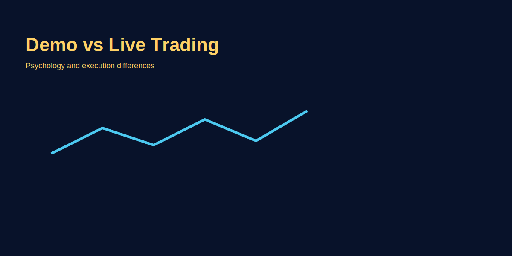

Demo vs Real Trading Reality
Problem-based introduction
Demo accounts feel easy — no emotional pressure, perfect fills. Real trading introduces slippage, execution, and real fear/greed. This article explains practical differences and how to bridge the gap using GOLD (XAU/USD) as an example for transition plans.
Key Differences: Demo vs Live
| Aspect | Demo Account | Live Account |
|---|---|---|
| Execution | Instant fills; simulated liquidity | Slippage 0.2–2 pips; requotes during news |
| Emotions | Zero fear/greed; easy to hold SL | Fear causes early exits; greed moves SL |
| Spread | Often tighter/fixed spreads | Variable spreads; widen 3x–5x at news |
| Platform | Server fast; no delays | Server lag possible; internet drops critical |
| Psychology | Overconfidence builds; no real loss pain | Loss aversion triggers rule breaks; revenge trades |
Emotional Shift: Demo → Live
Demo winner mindset: 50% winrate, 1:2 R:R feels easy; hold winners, cut losers mechanically. No hesitation pressing "Buy" button.
First live trade reality: Heart rate spikes seeing -$5 unrealized loss (even if strategy valid). Early exit at +$3 instead of planned +$10 target. Fear paralyzes next entry despite perfect setup.
Why? Real money = survival instinct activation. Brain treats $20 risk like physical threat. Demo = video game mode; no cortisol spike.
Solution: Start live with 0.01 lot (nano) where $1 risk feels trivial. Build psychological tolerance slowly — micro → mini → standard over 6–12 months.
Execution Reality Check (GOLD Example)
Demo scenario: GOLD 2020.00, SL 2015.00, TP 2030.00. Entry filled at 2020.00 exactly; TP hit at 2030.00. Clean 10R profit.
Live scenario (same setup):
- Entry order 2020.00; actual fill 2020.30 (0.3 slippage = $3 on 0.1 lot).
- Price spikes to 2014.50 (within SL zone 2015.00); stop triggered at 2014.80 due to spread widening. Loss realized.
- Price reverses to 2030+ without you. Demo would have held; live stopped out by liquidity hunt.
Lesson: Place SL 5–10 pips beyond obvious levels (round numbers, swing lows). Demo doesn't teach this — live does, painfully.
Slippage Math: Hidden Cost
Measurement: Journal 50 live trades; note expected fill vs actual fill. Calculate avg slippage.
Example: Avg slippage 0.4 pip/trade on GOLD; 0.1 lot = $0.40/trade. 100 trades/month = $40 slippage cost (never on demo). Annual $480 leakage.
Mitigation:
- Use limit orders instead of market orders (set buy limit 2020.00; wait for fill).
- Avoid trading 2 min before/after major news (NFP, FOMC); spreads explode, slippage 5–10 pips.
- Trade London/NY overlap (18:30–22:30 IST) for tightest spreads on GOLD.
- Test 2–3 brokers demo-to-live; choose lowest avg slippage (measure 50 trades each).
Psychological Traps in Live Trading
- Revenge trading: Demo loss = reset account, no pain. Live $20 loss → "I'll recover with double size" → $40 loss → spiral. Kill switch rule: 2 consecutive losses = stop trading for day.
- Overconfidence bias: 10-win streak on demo = "I'm ready for 1.0 lot!" Live reality: First loss at 1.0 lot = -$100; panic selling, abandon strategy.
- Analysis paralysis: Live money → overthinking setups that were clear on demo. "What if..." loops. Solution: screenshot demo setups; if live chart matches exactly, execute without hesitation (pre-commit rule).
- Profit-taking too early: Demo: hold for 30-pip TP easily. Live: exit at +10 pips "to lock profit" (fear of reversal). Kills R:R. Solution: partial profit (50% at 1R, 50% at 2R).
Transition Framework (12-Week Plan)
Week 1-4: Demo mastery phase
- Trade 100 setups on demo; same pair (EUR/USD or GOLD), same session (London open).
- Journal every trade: setup screenshot, entry reason, exit reason, R achieved, emotional state.
- Target: 50%+ winrate, avg R:R 1:1.5+, max 3 consecutive losses without rule break.
Week 5-6: Simulation stress test
- Fund demo with exact amount you'll start live ($200-$500).
- Trade with "real" risk: 1-2% per trade (no $100K virtual balance cushion).
- If you blow demo account, restart Week 1. If profitable, proceed.
Week 7-8: Micro live (emotional acclimatization)
- Fund live $100-$200; trade 0.01 lot (nano) — $0.10/pip for forex, $0.01/0.10 move for GOLD.
- Risk 1% = $1-$2/trade. Goal: NOT profit, but execute strategy without emotional deviation.
- Compare live vs demo execution: measure slippage, spread during your session, platform lag.
Week 9-12: Scale test
- If Week 7-8 profitable (or breakeven with good execution), increase to 0.05-0.1 lot (micro).
- Risk 1-2% = $5-$10/trade on $500 account. Track: Do emotions change at $10 risk vs $2?
- Monthly review: Winrate, avg R:R, max drawdown, emotional mistakes logged. If consistent, scale to 0.2-0.5 lot in Month 4.
Live Trading Checklist (Pre-Trade Ritual)
- ✅ Setup matches demo playbook exactly (screenshot comparison)?
- ✅ Risk calculated: lot size = (account × 1%) / (SL pips × pip value)?
- ✅ Stop-loss placed 5-10 pips beyond obvious level (not tight on support)?
- ✅ Take-profit at 1.5R minimum (not arbitrary round number)?
- ✅ Spread < 1.0 pip for majors, < 0.5 for GOLD (check current spread)?
- ✅ No high-impact news in next 30 min (NFP, FOMC, CPI)?
- ✅ Internet stable, VPS backup if critical?
- ✅ Emotional state: calm, no revenge mode, no overconfidence?
- ✅ Journal ready: will log trade immediately after entry?
Red Flags: When to Pause Live Trading
- 3 consecutive losses: Stop for day; review trades next morning. Prevent tilt spiral.
- Breaking own rules: Moved SL away from plan, doubled size after loss, chased price. Immediate pause; 2-day demo reset.
- Slippage > 1 pip avg: Broker execution poor or internet unstable. Switch broker or fix connectivity before continuing.
- Emotional volatility: Can't sleep thinking about trades, checking phone every 5 min, mood swings based on P&L. Reduce size by 50% or return to demo for 2 weeks.
- Drawdown > 10%: $500 account → -$50. Stop live; backtest strategy again; check if market regime changed (trending → ranging). Resume only after fix identified.
Demo Practice Drills (Ongoing Skill Maintenance)
Even after live profitable, maintain demo account for:
- New strategy testing: Don't test unproven setups on live. Demo 50 trades first.
- New instruments: Switching from EUR/USD to GOLD? Demo 30 trades to understand volatility, spread behavior, session characteristics.
- Stress drills: Practice holding trades through simulated drawdowns. "What if my winner pulls back 50% before hitting TP?" — demo builds tolerance.
- Speed training: Scalping requires fast execution. Demo repetitions build muscle memory for order entry, SL/TP placement in < 5 sec.
Common Demo-to-Live Failures (Case Studies)
Case 1: Overleveraged newbie
- Demo: $100K balance, 1.0 lot trades, 70% winrate, feels invincible.
- Live: $500 account, keeps 1.0 lot (200:1 leverage used). First loss = -$100 (20% account). Panic, revenge trade 2.0 lot. Account blown in 3 trades.
- Lesson: Match demo balance to planned live balance. Trade same lot sizes on demo as intended live.
Case 2: Analysis paralysis trader
- Demo: Decisive, follows plan, 55% winrate, 1:2 R:R.
- Live: Sees perfect setup, hesitates 5 min, enters at worse price. Misses TP by 2 pips, holds hoping for more, reverses to SL. Winrate drops to 30%.
- Lesson: Pre-commit rule: If demo playbook triggered, execute live within 30 sec. No second-guessing.
Case 3: Early exit syndrome
- Demo: Holds winners to full TP; 1:2 R:R consistent.
- Live: Exits at +5 pips (0.5R) on 20-pip target setups. "Bird in hand better..." mentality. Winrate 60% but R:R 1:0.5 = net loss after costs.
- Lesson: Partial profits: 50% at 1R (locks something), 50% rides to 2R (maintains R:R). Or use trailing stop: after +10 pips, trail SL to breakeven; let runner work.
Image-based examples (mandatory)
Common Mistakes
- Assuming demo performance equals live performance.
- Instantly increasing position size after a few wins on demo.
- Skipping emotional acclimatization phase (nano/micro lot practice).
- Not measuring slippage/spread differences between demo and live.
- Trading live during high-impact news without testing demo execution first.
- Ignoring kill switch rules (trading through tilt after consecutive losses).
Pro Tips
- Use a fixed step plan: demo → small real → scale gradually with documented edge.
- Keep a stopwatch: measure execution time from signal to order fill on live vs demo.
- Parallel trading: Run same strategy on demo + live micro for 1 month; compare emotional execution vs mechanical demo. Identifies psychological weak points.
- Record screen: Use OBS to record first 20 live trades; review hesitation patterns, rule breaks. Visual feedback powerful for behavior correction.
- Accountability partner: Share trade log with mentor/peer; external review catches emotional biases you miss.
- Risk ladder system: Start 0.5% risk; after 30 profitable trades, increase to 1%; after 50 more, 1.5%. Gradual confidence building.
Risk Warning
Live trading involves real monetary risk; transition only when small, repeatable edges are shown in controlled sizes.
SEO FAQs
- 1. Demo vs real: main differences?
- Execution quality (slippage 0.2–2 pips live vs instant demo fills), emotional responses (fear/greed in live), variable spreads (widen 3x–5x during news), platform reliability (internet drops critical live).
- 2. Kab live shift karna chahiye?
- After 100+ demo trades with 50%+ winrate, 1:1.5+ avg R:R, consistent journaling habit, and zero emotional rule breaks. Start live with 0.01-0.05 lot (nano/micro) for emotional acclimatization.
- 3. How to reduce slippage?
- Use limit orders instead of market orders; avoid trading 2 min before/after major news (NFP, FOMC); trade London/NY overlap (18:30–22:30 IST) for tight spreads on GOLD; test 2–3 brokers, choose lowest avg slippage.
- 4. Demo pe profitable, live pe loss kyu?
- Emotional execution differs: early exits kill R:R, hesitation causes missed entries, revenge trading after losses. Solution: start nano lot where $1 risk feels trivial; build psychological tolerance over 3–6 months.
- 5. Kitne time demo practice karein before live?
- Minimum 3 months with 100+ trades, ideally 6 months for solid habit formation. Quality > quantity: 50 well-journaled trades better than 500 random clicks.
- 6. Live account size minimum kitna hona chahiye?
- $100-$200 minimum for nano/micro lots (0.01-0.05); $500+ realistic for proper risk management (1-2% risk = $5-$10/trade with comfortable buffer). Avoid starting < $100; insufficient for meaningful practice.
- 7. Demo aur live broker same hona chahiye?
- Yes. Execution model, spread behavior, platform differs broker-to-broker. Demo with Broker A, live with Broker B = unfamiliar execution. Stick with same broker for seamless transition.